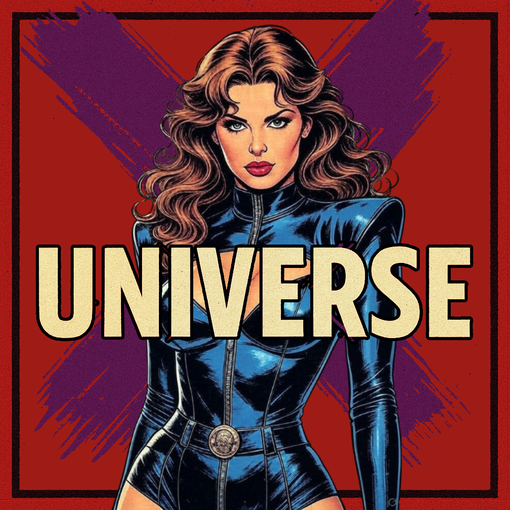

Marvel's X-Universe
X-Universe is a Classic FASERIP actual play that uses TSR's Marvel Super Heroes game, Basic Revised Rules. The show starts with a crew of villains and follows their climb from small time jobs to city shaking trouble, then later shifts to a fresh group of young heroes trying to clean up the mess.
This page collects every episode in one place. All links open the show on Apple Podcasts, so you can pick the episode there or subscribe and listen in order.

Episode Guide
All links go to Marvel's X-Universe on Apple Podcasts: podcasts.apple.com
- 55 – They find out a source! May 6, 2023
- 54 – Where is NAC-16 coming from? Mar 27, 2023
- 53 – Season 6 Starts here… Mar 20, 2023
- 52 – Special Episode: William Stark the Destiny Dec 17, 2019
- 51 – Special Episode: The Funeral of William Stark Dec 9, 2019
- Season 5 Teaser – Us or them? #SupportMutantAct2019 Jun 20, 2019
- 50 – All Evil things must come to an end… for now? Mar 23, 2019
- 49 – Enter Jack Hunter… Mar 23, 2019
- 48 – The Jig is up Feb 27, 2019
- 47 – Confirm the kill! Feb 10, 2019
- 46 – Magneto hunt continues! Feb 2, 2019
- 45 – The hunt for Magneto begins… Jan 30, 2019
- 44 – Dropping Loads… of Hail! Jan 15, 2019
- 43 – Super Villain Vacation! Jan 9, 2019
- 42 – Into the Ocean… Jan 6, 2019
- 41 – Deep inside… Dec 29, 2018
- 40 – The Aftermath from the COIL Base Nov 30, 2018
- 39 – Storming into C.O.I.L. Part 2 Nov 26, 2018
- 38 – Storming into C.O.I.L! Nov 16, 2018
- 37 – Stark Island? Nov 9, 2018
- 36 – The Quest to find Johnny! Nov 3, 2018
- 35 – "Wrap Show" #2 Oct 24, 2018
- 34 – Its all about the Nightshade.. Oct 24, 2018
- 33 – Still figuring things out… Oct 20, 2018
- 32 – Things are back to normal??? Oct 2, 2018
- 31 – Lochs of Love Sep 25, 2018
- 30 – "Wrap Show" #1 Sep 8, 2018
- 29 – Who do you stand with? Sep 7, 2018
- 28 – A Wrap of Acceptance… Sep 4, 2018
- 27 – William has returned! Sep 4, 2018
- 26 – A real sad Sandwich.. Aug 22, 2018
- 25 – Tragedy Strikes, Way to go Mister Impulse. Aug 9, 2018
- 24 – Dr. Speed is a jerk… Aug 7, 2018
- 23 – Takes 2 minutes for Criminals to be Criminals.. Aug 1, 2018
- 22 – Jim Jackson is back… with a twist. Jul 27, 2018
- 21 – "By Any Means Necessary" Aftermath.. Jul 22, 2018
- 20 – Clean up after the Fanatical Four Incident Jul 15, 2018
- 19 – The Group is looking for Mister Doom Jul 8, 2018
- 18 – What if.. They were the good guys?! Jul 5, 2018
- 17 – The group meets up with Dr. Doom.. Jul 1, 2018
- 16 – The "Mayor" extends his campaign, eyes the Senate. Jun 24, 2018
- 15 – Taking over Dallas City Hall.. Jun 17, 2018
- 14 – Aftermath from X-Men Fight.. May 30, 2018
- 13 – The REAL Metal Adder returns… May 27, 2018
- 12 – What happened to William? May 16, 2018
- 11 – William's Destiny May 3, 2018
- 10 – Guest Starring "Johnny Depp" Apr 29, 2018
- 9 – The LMD's are revealed?! Apr 21, 2018
- 8 – William, on his own. Oh boy. Apr 19, 2018
- 7 – Bill Nye the... Lawyer guy?! Apr 4, 2018
- 6 – The Villains are back! Mar 29, 2018
- 5 – Who is Thomas Johnson? Jan 31, 2018
- 4 – Let's take on the local druglords! Dec 14, 2017
- 3 – A new villain joins the chaos! Nov 22, 2017
- 2 – Let's jump into stealing shit! Nov 13, 2017
- 1 – It all starts here! Nov 13, 2017
- 0 – Meet the Players and their Characters Nov 13, 2017